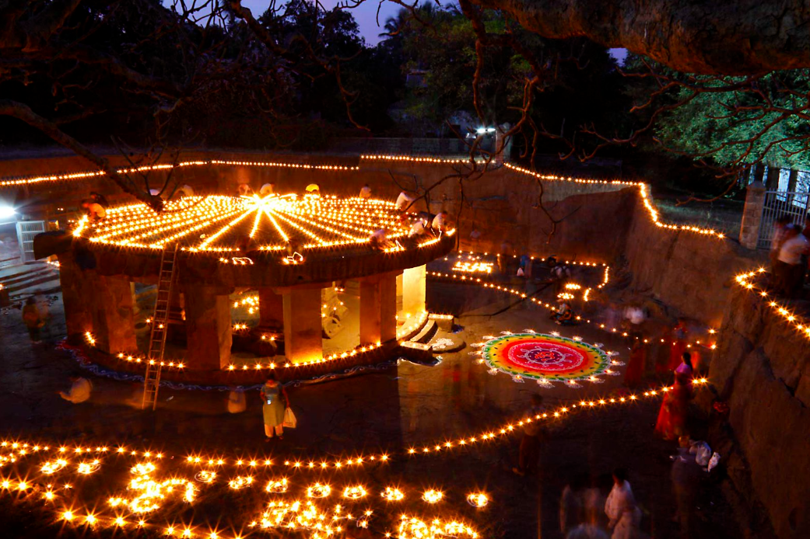
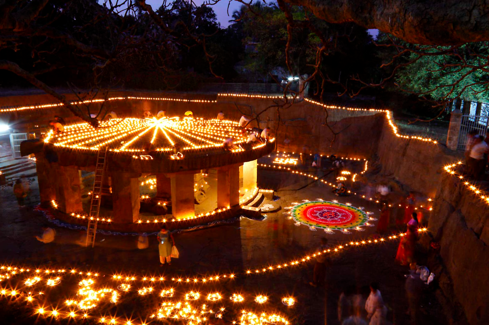
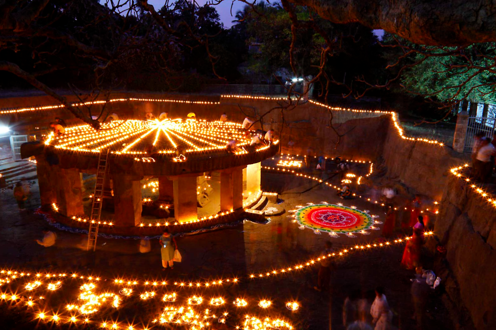

Pune, formerly known as Poona during British India, is Maharashtra’s second-largest city after Mumbai. Nestled on the western edge of the Deccan Plateau, on the leeward side of the Sahyadri Mountains (Western Ghats), Pune is often referred to as the "Queen of the Deccan" for its rich Maratha heritage and cultural significance.
The city has played a crucial role in Indian history, from the Maratha Empire to the Indian freedom struggle. Marathi is the official language and most widely spoken, followed by Hindi.
One of Pune’s most iconic historical landmarks is Shaniwar Wada, built in the 17th century during the reign of Bajirao I, the legendary Peshwa who never lost a single battle. Other heritage sites include the Bedse Buddhist Caves, Karla (Karli) and Bhaja Caves, Pataleshwar Temple (carved from a single stone), Sinhgad Fort, and the Aga Khan Palace.
Pune is home to several architectural marvels and places of worship, including the famous Shreemant Dagdusheth Halwai Ganpati Temple, Chaturshringi Temple, Shree Omkareshwar Temple, and historic churches such as St. Mary's, St. Xavier’s (Camp), All Saints Church (Khadki), St. Paul’s Church (Agarkar Nagar), and the Ohel David Synagogue.
Among the city's gardens, the Pune-Okayama Friendship Garden (Pu. La. Deshpande Garden) stands out as the largest Japanese-style garden in Asia outside Japan, spanning 10 acres of serene landscape.
For nature lovers and trekking enthusiasts, Pune serves as a gateway to scenic getaways like Mahabaleshwar and Lonavala, known for their mist-covered hills and lush greenery. Popular trekking destinations include Sinhgad, Shivneri, Rajgad, Pratapgad, and Lohagad Forts.
Shopping in Pune is a vibrant experience, with bustling markets like Tulsibaug, Juna Bazaar, FC Road, MG Road, and Fashion Street, where bargaining is an art.
Food lovers can indulge in authentic Maharashtrian delicacies such as Vada Pav, Misal Pav, Pav Bhaji, Kandha Bhaji, Palak Bhaji, Pitla Bhakri, Modak, Puran Poli, Thalipeeth, Aluwadi, and Sabudana Vada. For snacks, Pune’s famous Bhakarwadi, Chaklis, and Shrewsbury biscuits are must-tries—perfect for enjoying on the go or packing as souvenirs.
With its unique blend of history, culture, natural beauty, and culinary delights, Pune offers an experience like no other.

Pune is a city rich in history, culture, and natural beauty. From ancient forts and temples to serene gardens and adventurous trekking spots, Pune offers a diverse range of attractions for every kind of traveler.
Shaniwar Wada – Built in 1732, this fort was the seat of the Peshwas of the Maratha Empire, famous for its architecture and historical significance.
Aga Khan Palace – A symbol of India’s freedom struggle, this palace housed Mahatma Gandhi during the Quit India Movement.
Lal Mahal – The childhood home of Chhatrapati Shivaji Maharaj, showcasing exhibits related to his life.
Pataleshwar Cave Temple – An 8th-century rock-cut cave temple dedicated to Lord Shiva, carved from a single stone.
Raja Dinkar Kelkar Museum – Houses over 20,000 artifacts showcasing Indian history, art, and culture.
Shreemant Dagdusheth Halwai Ganpati Temple – A revered Ganesh temple known for its grand celebrations and gold-adorned idol.
Chaturshringi Temple – A temple dedicated to Goddess Chaturshringi, situated on a hill with panoramic city views.
Shree Omkareshwar Temple – An ancient Lord Shiva temple with intricate architecture.
Ohel David Synagogue – Also known as the Red Synagogue, one of India's largest synagogues.
St. Mary’s Church – Pune’s oldest church, built in 1825 during the British era.
Pune-Okayama Friendship Garden (Pu. La. Deshpande Garden) – The largest Japanese-style garden in Asia outside Japan.
Rajiv Gandhi Zoological Park – A well-maintained zoo with a dedicated snake park and various wildlife species.
Empress Garden – A historic botanical garden spread over 39 acres, ideal for nature lovers.
Vetal Tekdi – The highest point in Pune, offering breathtaking sunrise and sunset views.
Taljai Hills – A scenic nature spot popular for bird watching and morning walks.
Sinhgad Fort – A popular trekking destination with historical significance and stunning views.
Rajgad Fort – The former capital of the Maratha Empire, offering challenging treks.
Lohagad Fort – A monsoon favorite with lush greenery and mesmerizing trails.
Shivneri Fort – The birthplace of Chhatrapati Shivaji Maharaj, a must-visit for history enthusiasts.
Torna Fort – The highest fort in Pune district, ideal for adventure seekers.
Lonavala & Khandala (65 km) – Famous for waterfalls, scenic landscapes, and chikki.
Mahabaleshwar (120 km) – Known for its strawberry farms, viewpoints, and pleasant climate.
Matheran (120 km) – A car-free hill station offering breathtaking views and horse rides.
Panchgani (100 km) – A peaceful retreat with lush valleys and colonial-era charm.
Bhimashankar (110 km) – Home to one of the twelve Jyotirlingas and a popular trekking spot.
Tulsibaug – A bustling market for traditional jewelry, clothes, and household items.
FC Road & JM Road – A paradise for shoppers and food lovers, offering trendy fashion and street food.
MG Road & Fashion Street – Popular for budget shopping and accessories.
Juna Bazaar – An old flea market, perfect for antique lovers and bargain hunters.
Koregaon Park – A hub for cafes, nightlife, and boutique stores.
Whether you're a history buff, nature lover, or foodie, Pune and its surroundings have something for everyone!